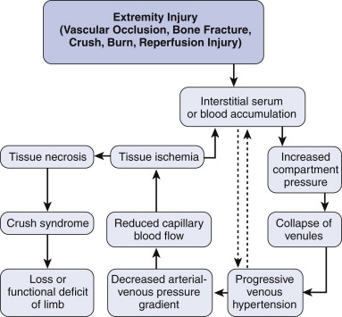
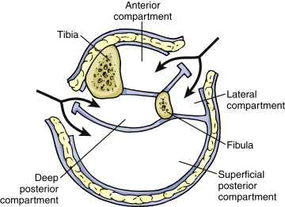

Leg Fasciotomy

I perform a
double-incision, 4 compartment fasciotomy
GA. Supine.
Prophylactic Abx. Prepare and drape free covering the foot in a
size 8 ½ glove.
· I first make a
medial incision
— Posteromedial
incision, 2cm posterior to posterior margin of tibia about 20 cm
in through skin and fat so that all of the fascial incision can
be performed under vision by retracting the superficial fascia
with Langenbach retractors.
— I seek and protect
the Long saphenous v & saphenous nerve
— I use Metzenbaum
scissors to incise the deep fascia from the knee to the ankle to
expose the gastrocnemius muscle and decompress the superficial
compartment
— I then separate the
fibers of Gastrocnemius and soleus and if necessary detach
fibers of soleus from the middle third of the medial border of
the tibia to expose the fascia of the deep compartment and
incise its fascia.
· Lateral
— Skin incision 1/2
way between crest of tibia & fibula
— Transverse
fascial incision to identify Anterior & peroneal
compartments
— 2x longitudinal
incisions
— Idenitfy &
preserve common peroneal nerve during proximal faciotomy of
anterior
compartment
· Leave skin open.
Apply saline-soaked gauze and elevate the limb. Splint the limb
with a backslab and loose crepe dressing
· Consider delayed
primary closure after 3-5/7
· Liberal use of SSG
if closure difficult
Thigh?
Below elbow?
Uncommon; volar and dorslal compartments need
decompression
S shaped incision over wrist to avoid prolbmeatic
contractures.
Complications
How do you measure the compartment pressure in
the leg
· Slit a 14G venous
cathether, manometer tubing, a 3-way tap and pressure transducer
(sphingnomanomter or electronic transducer).
· Prepare skin. 2ml
1% lignocaine. Insert catheter and withdraw trocar.
· Inject saline into
catheter
· Prime manometer
tubing with saline and connect via a 3-way tap to the catheter
and pressure transducer
How do you measure the compartment pressure in
the leg
· I use the
Whitesides technique
· Equipment:
Mecurary manometer, two plastic IV extension tubes, two 18G
needles, one 20ml syringe, one 3 way tap and one bag saline.
· Set up: Use one
needle to vent the saline bag. Connect one extension tube to the
three way tap and connect the other end to the needle. Connect
the 20mL syringe to the other limb of the 3-way tap and close
off the third limb
· Aspirate saline
into the extension tubing to fill about half its length and then
close off the tap so that the saline is not lost
· Use the last
extension tubing to connect the final limb of the 3 way tap to
the mercurary manometer.
· Remove the syringe
and fill it with 15ml of air and re-connect.
· The needle is
inserted into the limb and the three way tap opened to form a T
connection between the manometer, tissue and syringe.
· Depress the
syringe slightly to flush the tip of the needle.
· Apply gentle
pressure on the syringe and read the pressure when the meniscus
is flat.
The alternative
is to use an electronic transducer.
· 14G venous
cathether, manometer tubing, a 3-way tap and pressure transducer
(sphingnomanomter or electronic transducer).
· Prepare skin. 2ml
1% lignocaine. Insert 14G canula and withdraw trocar.
· Inject saline into
canula to prime it
· Connect one end of the manometer tubing to a 3 way
tap and prime manometer tubing with saline to ensure that there
are no bubbles and connect the other end to the canula in the
tissues.
· Connect the three way tap to a primed and zeroed
electronic pressure transducer.